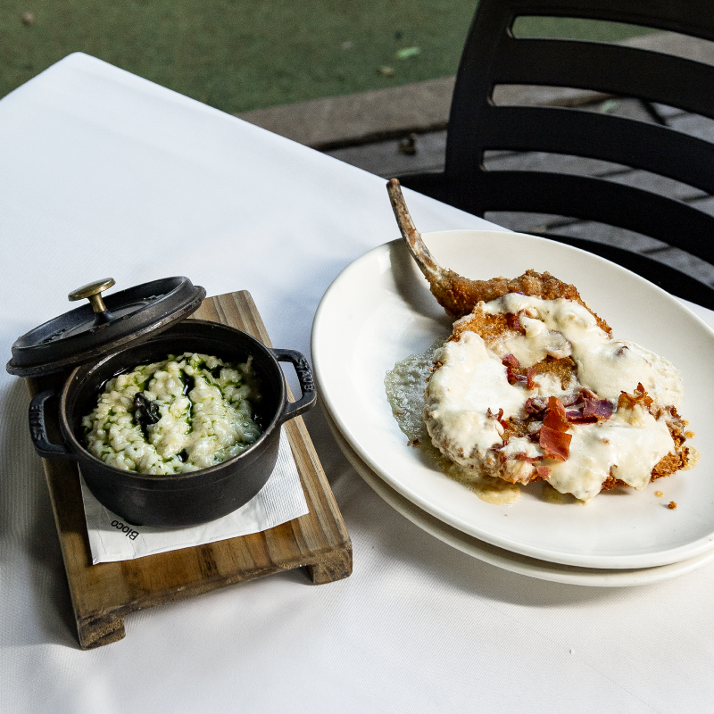

Boa Lembrança 2025Milanese, Pomodoro & Aligot
R$ 189Filé empanado em crosta dourada crocante, pomodoro rústico fresco e aligot aveludado de queijos nobres.
Acompanha cerâmica oficial pintada à mão · Coleção 2025